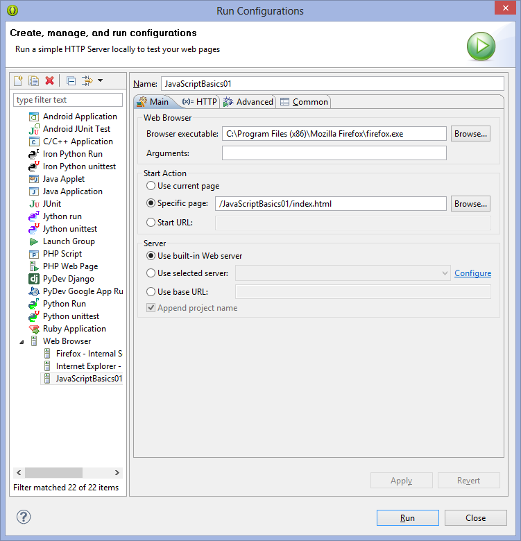

Table of Contents
- Aptana or Web Tools Install
- Alternative
- Explore the IDE
- Toolbar Icons
- Create New Web Project
- Run the Project
- Create a Static Web Project
- Using the Editor
- Links
Aptana or Web Tools Install
We can make Eclipse much more comfortable for web development by adding in the Aptana tools.
http://download.aptana.com/studio3/plugin/install
Choose Help | Install New Software. Press the Add button. Set:
- Name:Aptana
- URL: http://download.aptana.com/studio3/plugin/install
Step through the wizard.
Alternative
I suggest going with the Aptana Plugin, however, alternatively, you can do this:
Choose Help | Install New Software from the Eclipse menu. Select the following in the Work With drop down:
Scroll to the bottom to the Web, XML, Java EE and OSGi Enterprise Develpment section.
- Choose Eclipse Web Developer Tools
- JavaScript Developer Tools
- Web Page Editor
You can have both Aptana and the Web Developer Tools installed at the same time. However, it can be confusing. To uinstall the Web Developer Tools, choose Help | About | Installation Details and follow the wizard.
Explore the IDE
Let's take a moment to get familiar with the IDE.
Toolbar Icons
- Build All
- Outline
- App Explorer
- Aptana Start Page
- Show Preview
- Terminal
- Theme Preferences
The Commands Menu
Create New Web Project
Make sure you can see the App Explorer and the Project Explorer. The App Explorer is on the Toolbar, you can reach Project Explorer by choosing the following from the menu:
- Window | Show View | Project Explorer
Here are the steps to create a new project
- File | New | Web Project or File | New | Other | Web Project
- If you want a default Index.html file then choose Basic Web Template
- If you want an empty project, choose Default Project
- We will HTML5 boilerplate later. Skip them for now.
- After creating your project, choose File | New From Template | HTML | HTML 5 to add an HTML 5 file to your project.
And nearly always add jQuery by putting on of these in your <head> element:
- <script src="http://code.jquery.com/jquery.min.js"></script>
- <script src="http://code.jquery.com/jquery-latest.js"></script>
- <script src="http://code.jquery.com/jquery-1.10.1.min.js">
Run the Project
Aptana comes with a built in Web Server. To get that to work:
- right click on your HTML file choose Run As | JavaScript project.
- If that fails, choose Run a | Run configuration
- Set the Name for your configuration. For instance: JavaScriptBasics01
- Choose the Browser executable. For instance: C:\Program Files (x86)\Mozilla Firefox\firefox.exe
- Choose Specific Page (or whatever makes sense for you in a particular circumstance.)
- Server: Use Built-in Server
- Press Apply
- Select Run
Figure 01: Choose a Template
Figure 02: Give your project a name.
Figure 03: Add a file your project.

Figure 04: Setting up the Run Configuration
Create a Static Web Project
Select the Next button and step through the wizard. It will take awhile, and you will be asked to restart the IDE at the end. But when you are done, you should be able to choose File | New | Static Web Project.
Using the Editor
- To get code completion in HTML mode, type open angle bracket: <
- To get code completion at other times, control space.
- Choose Window Customize Perspective to get a better sense of what you can do with the toolbar.
- Ctrl-Shift: Select Tag Pair
- Right Click - Source - Format: Format you HTML.
Links
- https://wiki.appcelerator.org/display/tis/HTML+Development
- http://dailyupdateu.blogspot.com/2008/07/top-10-tips-for-new-eclipse-users.html